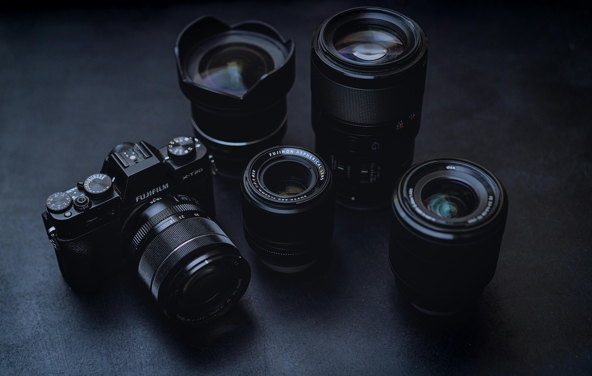

Lens Odak Uzaklıkları: 24mm, 35mm, 50mm, 85mm Hangi Çekimlerde Kullanılır?
Fotoğrafçılıkta doğru lensi seçmek, kompozisyonun gücünü ve görüntünün kalitesini belirleyen en önemli kararlardan biridir. Özellikle 24mm, 35mm, 50mm ve 85mm gibi yaygın kullanılan sabit odak uzaklıkları, farklı çekim türleri için benzersiz avantajlar sunar. Bu rehberde, bu dört popüler lensin hangi çekimlerde en iyi performansı verdiğini, avantajlarını ve kullanım önerilerini detaylıca ele alıyoruz.
24mm Lens: Geniş Açıyla Hikâye Anlatımı
Özellikleri:
- Geniş açı
- Daha fazla alan kapsar
- Sahneyi hikâye anlatımı için tamamlayıcı hale getirir
- Yakın mesafelerde perspektif genişlemesi yaratır
Hangi Çekimler İçin İdeal?
- Manzara Fotoğrafçılığı: Doğal alanları geniş bir açıyla kadraja almak için mükemmeldir. Gökyüzü ve ön plan detaylarını birlikte göstermek kolaylaşır.
- Mimari Fotoğrafçılık: Mekânın tüm yapısını çarpıcı bir perspektifle sunar. Özellikle iç mekân çekimlerinde alanı geniş gösterme avantajı sağlar.
- Sokak Fotoğrafçılığı: Ortamın atmosferini yakalamak istediğinizde 24mm lens büyük kolaylık sağlar.
- Vlog ve Video Çekimleri: Kendinizi çekerken fazla geri gitmenize gerek kalmaz. Dar iç mekânlarda da etkili kullanım sağlar.
Kimlere uygun?
Sahnesini geniş tutmak isteyen, hikâye anlatımı ön planda olan fotoğrafçılar için idealdir.
35mm Lens: İnsan Gözüne En Yakın Perspektif
Özellikleri:
- Doğal perspektif
- Konu ve çevre arasında dengeli bir kadraj
- Sokak ve belgesel fotoğrafçılarının favorisi
Hangi Çekimlerde Kullanılır?
- Sokak Fotoğrafçılığı: Hem konuyu hem de çevresel bağlamı göstermek için ideal odak uzaklığıdır. Fotoğraflar doğal görünür.
- Belgesel / Haber Fotoğrafçılığı: Sahnenin gerçekliğini bozmadan olayları aktarır.
- Çevresel Portreler: Kişiyi ve bulunduğu ortamı birlikte göstermek istediğinizde mükemmel bir seçimdir.
- Düğün ve Organizasyon Çekimleri: Çiftin yakın çekimleri ve ortamdan detaylar için çok yönlüdür.
Kimlere uygun?
Hem günlük hayatı hem de profesyonel sahneleri doğal bir bakış açısıyla çekmek isteyenlere uygundur.
50mm Lens: “Nifty Fifty” – Çok Yönlü ve Keskin
Özellikleri:
- Standart perspektif
- Yüksek ışık performansı (genellikle f/1.8 – f/1.4)
- Arka planı güzelce bulanıklaştırır (bokeh)
Hangi Çekimlerde Kullanılır?
- Portre Fotoğrafçılığı: Baş ve omuz portrelerinde ideal bir odak uzaklığıdır. Yüz hatlarını doğal gösterir.
- Ürün Çekimi: Küçük ürünlerde keskinlik ve alan derinliği kontrolü sağlar.
- Düşük Işık Çekimleri: Geniş diyafram sayesinde yüksek ISO kullanmadan kaliteli çekim yapılabilir.
- Günlük Fotoğrafçılık: Hem sokakta hem iç mekânda çok yönlü bir kullanım sunar.
Kimlere uygun?
Yeni başlayanlardan profesyonellere kadar herkesin çantasında bulunması gereken bir lens türüdür.
85mm Lens: Portrede Kusursuz Perspektif
Özellikleri:
- Sıkıştırılmış perspektif
- Konuyu arka plandan belirgin şekilde ayırır
- Portre fotoğrafçılarının vazgeçilmezi
Hangi Çekimlerde Kullanılır?
- Portre Fotoğrafçılığı: Profesyonel portrelerde yüz hatlarını en doğal gösteren lenslerden biridir. Arka planı güçlü bir şekilde ayrıştırır.
- Moda Fotoğrafları: Modeli öne çıkaran sıkıştırılmış perspektifi sayesinde moda çekimlerinde çok tercih edilir.
- Düğün Portreleri: Gelin–damat portrelerinde estetik sonuç sağlar.
- Sahneden Uzak Çekimler: Etkinliklerde uzaktaki bir kişiyi ortamı bozmadan çekmek için idealdir.
Kimlere uygun?
Daha sanatsal ve profesyonel portreler üretmek isteyen fotoğrafçılar için en güçlü araçlardan biridir.
Hangi Odak Uzaklığı Ne Zaman Seçilmeli?
| Lens | Avantaj | En İyi Kullanım Alanı |
|---|---|---|
| 24mm | Geniş açı, dramatik perspektif | Manzara, mimari, video, sokak |
| 35mm | Doğal perspektif, çok yönlülük | Sokak, belgesel, çevresel portre |
| 50mm | Keskinlik, bokeh, düşük ışık | Portre, ürün, günlük fotoğraf |
| 85mm | Sıkıştırılmış perspektif, güçlü ayrım | Portre, moda, düğün |
Sonuç
24mm, 35mm, 50mm ve 85mm lensler, fotoğrafçılıkta en çok kullanılan ve en güçlü sonuçları veren odak uzaklıklarıdır. Her biri farklı bir hikâye anlatımı ve estetik sunar. Çekmek istediğiniz sahne türüne göre doğru lensi seçmek, fotoğraflarınızın etkisini doğrudan artırır.